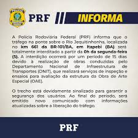
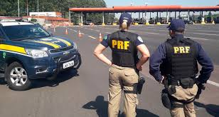
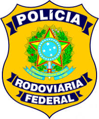

Meus Projetos Desenvolvidos com Estudantes

Futuro PRF: Polícia Rodoviaria Federal
Este projeto é uma página web que apresenta uma lista do que deve saber para se formar um PRF "Polícia Rodoviária Federal"
=======informações
Em 2025, a Polícia Rodoviária Federal (PRF) está com perspectivas de um novo concurso, com o envio de um pedido de 263 vagas para Policial Rodoviário Federal. Além disso, foi solicitado um edital para a área administrativa da PRF, com 248 vagas para Agente Administrativo. O concurso, se confirmado, visa suprir o déficit de servidores e atingir o efetivo legal da instituição.

PRF Oficial - Polícia RODOVIRIA Federal
A Polícia Rodoviária Federal (PRF), criada em 1928, é uma instituição federal brasileira de segurança pública focada na fiscalização e patrulhamento de mais de 75 mil km de rodovias federais. Com salários iniciais superiores a R 12.253 em 2026, a PRF atua na prevenção de acidentes, combate ao tráfico e crimes. www.gov.br www.gov.br +1 Principais Informações sobre a PRF: Missão e Atuação: Garante a segurança viária, atende vítimas de acidentes, combate o tráfico de drogas/armas e crimes contra o meio ambiente nas estradas federais. Concurso e Carreira: Exige nível superior em qualquer área. O concurso é um dos mais disputados do país, com atuação na área fim (policial) e meio (agente administrativo). Contatos e Emergência: O número de emergência é 191, disponível para denúncias e acidentes. História: Fundada em 24 de julho de 1928 como "Polícia de Estradas", sua atuação consolidou-se em 1945. Estrutura: Presente em todos os estados, com superintendências e postos de fiscalização.

Concurso PRF: Policial ou Agente Administrativo, qual escolher?
OO que exige o concurso PRF para Policial? O cargo de Policial Rodoviário Federal exige nível superior em qualquer área de formação, além de Carteira Nacional de Habilitação (CNH) na categoria “B” ou superior. A função exige uma formação robusta e a capacidade de lidar com situações de risco no campo. E para Agente Administrativo, o que é exigido? Para o cargo de Agente Administrativo, a exigência é bem mais acessível: nível médio completo. Ao contrário do cargo policial, o Agente Administrativo não precisa de CNH nem de uma preparação física intensiva. A função é voltada para gestão interna e suporte à operação da PRF. Como é a rotina de trabalho do Policial PRF? A rotina do Policial Rodoviário Federal é voltada para atividades de campo. O trabalho envolve policiamento ostensivo, fiscalização de trânsito, combate ao crime e atendimento a acidentes. A atividade de risco é constante e exige porte de arma e condições físicas adequadas, já que o Policial trabalha diretamente com o público e em situações de perigo. E a rotina de trabalho do Agente Administrativo? O Agente Administrativo atua nos bastidores, com funções como gestão de recursos humanos, logística de viaturas, suporte administrativo e análise de processos. A rotina é mais tranquila e administrativa, sem o contato direto com o público e sem risco físico, além de ser um trabalho de escritório. Qual é o salário do Policial Rodoviário Federal? O salário inicial do Policial PRF é de R$ 13.428,84, com possibilidade de chegar a R$ 23.000,00 no topo da carreira. Além disso, o Policial tem direito a auxílio alimentação de R$ 1.175,00 e o adicional de fronteira que pode chegar a R$ 2.000,00. Quanto ganha um Agente Administrativo na PRF? O salário inicial do Agente Administrativo é de R$ 5.638,87, podendo atingir R$ 6.389,79 no topo da carreira. Embora o salário seja inferior ao do Policial, o Agente Administrativo conta com benefícios, como o auxílio alimentação de R$ 1.175,00. Como é a carga horária do Policial PRF? O Policial Rodoviário Federal tem uma jornada de trabalho que varia entre 40 e 60 horas semanais, podendo incluir plantões de 6, 12 ou 24 horas, além de trabalho noturno, aos finais de semana e feriados. Esse formato exige alta disponibilidade e pode impactar a qualidade de vida de quem busca rotina mais regular. E a carga horária do Agente Administrativo? O Agente Administrativo trabalha em uma jornada regular de 40 horas semanais, de segunda a sexta-feira, com horário comercial. Isso torna o cargo ideal para quem deseja horário fixo, finais de semana livres e uma rotina mais equilibrada. O que é o Teste de Aptidão Física (TAF)? O Teste de Aptidão Física (TAF) é exclusivo para o cargo de Policial Rodoviário Federal e é considerado uma das avaliações físicas mais rigorosas do Brasil. O TAF inclui testes como barra, salto, abdominais e corrida. É um dos principais motivos pelos quais muitos candidatos desistem da carreira policial. O Agente Administrativo precisa passar no TAF? Não, o Agente Administrativo não precisa fazer o TAF. A seleção é composta apenas por provas objetivas e discursivas, sem a exigência de testes físicos. Qual cargo escolher no concurso PRF 2026? A escolha entre Policial Rodoviário Federal e Agente Administrativo depende do seu perfil e objetivos de carreira. Se você tem vocação para a segurança pública, gosta do trabalho de campo e está disposto a encarar desafios físicos e situações de risco, o cargo de Policial PRF pode ser o ideal. Por outro lado, se você prefere uma carreira estável, com rotina regular, salário fixo e sem a exigência de TAF, o cargo de Agente Administrativo oferece uma excelente oportunidade para quem possui nível médio e busca estabilidade no setor público. Quais dicas podem ajudar a sair na frente na preparação? O novo Concurso PRF 2025 promete ser um dos mais concorridos do país, e quem começar a se preparar agora sairá na frente. Mesmo antes da publicação do edital, é possível focar nas disciplinas mais cobradas nos últimos certames, como Língua Portuguesa, Direito Penal, Legislação de Trânsito, Raciocínio Lógico e Informática. Para ajudar nessa jornada, o Aprova Concursos oferece um curso preparatório exclusivo para o Concurso PRF, com videoaulas curtas, diretas ao ponto e organizadas em um plano de estudos inteligente. A metodologia é voltada para quem quer aprender de forma prática e objetiva, sem perder tempo com conteúdos desnecessários. Comece agora e garanta sua vantagem na disputa!
Quantas horas um PRF trabalha por dia?
O Policial Rodoviário Federal tem uma jornada de trabalho que varia entre 40 e 60 horas semanais, podendo incluir plantões de 6, 12 ou 24 horas, além de trabalho noturno, aos finais de semana e feriados
A estrutura do site é baseada em HTML, que define a semântica e o layout do conteúdo, enquanto o CSS é usado para estilizar a página visualmente, incluindo cores, tipografia e a disposição dos elementos.
O HTML organiza o conteúdo em um cabeçalho com o título do site, seguido por uma divisão principal (.container) que apresenta o propósito do site e a coleção de livros em uma seção flexível (.livros). Cada livro é destacado em seu próprio contêiner (.livro), mostrando uma imagem da capa, detalhes do livro e um link de compra. O design responsivo é garantido pelo uso de uma meta tag viewport e um layout flexível que se adapta a diferentes tamanhos de tela.
O CSS personaliza o visual do site, usando variáveis para cores, estilizando o texto com uma fonte importada do Google Fonts e aplicando um esquema de cores suaves e botões interativos. O uso de HTML e CSS é importante pois assim é possível criar um site acessível e esteticamente agradável sem a necessidade de scripts complexos, com foco na usabilidade e na experiência da pessoa usuária. A escolha da tipografia e do esquema de cores contribui para a atmosfera acolhedora do site, incentivando a exploração da coleção de livros.

Quantas horas um PRF trabalha por dia?
O O Policial Rodoviário Federal tem uma jornada de trabalho que varia entre 40 e 60 horas semanais, podendo incluir plantões de 6, 12 ou 24 horas, além de trabalho noturno, aos finais de semana e feriados
O HTML organiza o conteúdo em um cabeçalho com o título do site, seguido por uma divisão principal (.container) que apresenta o propósito do site e a coleção de livros em uma seção flexível (.livros). Cada livro é destacado em seu próprio contêiner (.livro), mostrando uma imagem da capa, detalhes do livro e um link de compra. O design responsivo é garantido pelo uso de uma meta tag viewport e um layout flexível que se adapta a diferentes tamanhos de tela.
Os scripts JavaScript incluem módulos para gerar nomes aleatórios, definir as perguntas e as lógicas de jogo, como iniciar o jogo, apresentar perguntas e alternativas, processar as escolhas dos jogadores, e exibir o resultado final. Este design modular facilita a manutenção e a expansão futura do jogo. A importância das ferramentas utilizadas (HTML, CSS, JavaScript) reside na criação de uma experiência interativa que não apenas entretém, mas também educa os jogadores sobre a complexidade ética e social da IA, incentivando a reflexão crítica sobre o papel da tecnologia em nossas vidas.